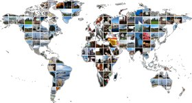
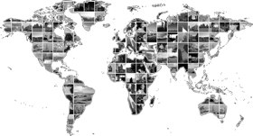

Photography
These are photographs I have taken on holiday and in my spare time. My interest for photography began with my first travels to China in 2005, where the scenery was simply breathtaking, and the culture so different that only pictures could clearly describe the many impressions.
Since then I have learned a lot about composure and the different techniques to create alternate interpretations of the subject. Places you pass every day can change dramatically when viewed through the viewfinder, and walking around Copenhagen discovering details other people might miss is still one of my favorite pastimes.
Updated my photostream on Flickr


Created a World Travel Map from GPS data